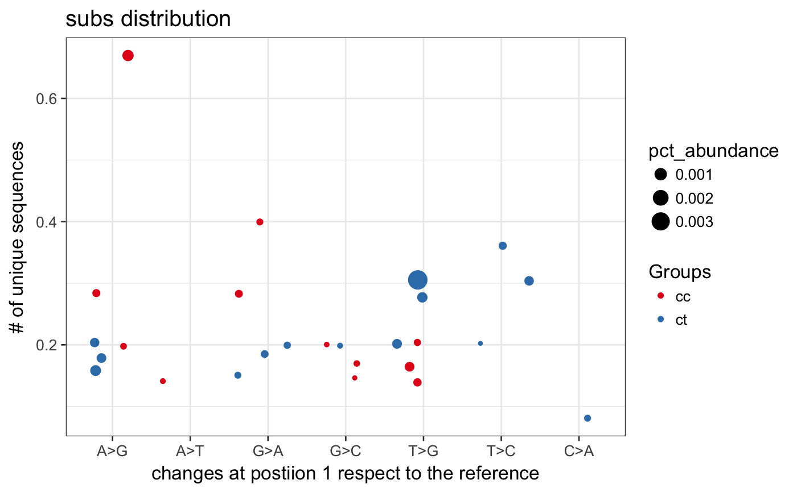

This function plot different isomiRs proportion for each sample at a given position focused on the nucleotide change that happens there.
isoPlotPosition(ids, position = 1, column = "condition")
| ids | Object of class IsomirDataSeq. |
|---|---|
| position | Integer indicating the position to show. |
| column | String indicating the column in colData to color samples. |
ggplot2::ggplot() Object showing nucleotide changes
at a given position.
It shows the nucleotides changes at the given position for each
sample in each group.
The color indicates the sample group. The size of the point is proportional
to the number of total counts of isomiRs with changes.
The position at y is the number of different sequences
supporting the change.
data(mirData) isoPlotPosition(mirData, column="group")